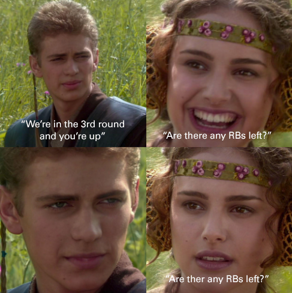

Preseason | Week 1 | Week 2 | Week 3 | Week 4 | Week 5
Adam Shafter (0-0)
Jonny Chernek

Another solid draft for the defending champ.
Saquons only a risky pick if you need him to be your best player. That's not the case when you have Aaron Jones and Stefon Diggs. Not to mention getting Gus Edwards (after Josh convinced everyone Dobbins was fine) is another steal.

Ridley Me This Hoe? (0-0)
Aaron Lam
Kyler, Zeke, and Ridley might be this years version of Jonny's championship team last year (Mahomes/Robinson/Adams).

Cee Deez Nuts (0-0)
Michael Gragg
Tight End might be the only weakness, also happens to be the only white on the team (not counting the kicker).
White people are the worst.

Judge Jeudy (0-0)
Josh Dasch
Needs one of the 4 rookie/second year receivers to break out. And going off the last couple years there’s a good chance of it happening.
Although, if we’re going off the last couple years we should also expect Josh’s first round pick to be injured by week 2.
Water is wet (0-0)
Eric Tchen
Solid strategy to pair a safe, high floor QB (Tannehill) with a low floor but high ceiling QB (Hurts). Lacking depth at running back but also has potential for a mid-season boost if/when Michael Thomas comes back.
Bonus points for drafting Koo before Aaron so his name doesn’t make as much sense.

Pound My Hole (0-0)
Bryan Opaskar
Running backs aren’t as strong as most but compared to Havrilla’s, they’re great.
Russ and DK should carry the team but just depends on if the Seahawks offense is more like the beginning of last year or end of last year.
Trophy Wife (0-0)
Courtney Ressa
Just because I’ve made fun of whoever's drafted Tom the last few years and been wrong, doesn’t mean I'm going to stop. He's old as fuck and I will be right about him being bad one of these years.
Big TD Goth Girls (0-0)
Justin Cicchella
Two #1 running backs and a great #1 receiver in Jeffereson but only one QB, and he's one coming back from injury.
Blue Balls (0-0)
Kevin Mullinger
Was able to get last year's MVP, Rodgers at the end of the 5th round. Other than him and Hopkins not much depth.
But we can blame Brien for that.

Dayton Manning (0-0)
Teddy Baldassarre
Would look a lot better if Dobbins never got hurt. Will need Mike Davis to step up like he did last year only this time you still have McCaffrey to go with him.

Solid Poo (0-0)
Brian Havrilla
Showing up to the draft late:

Liquid Poo (0-0)
Brien Mullinger

Other than Lamar and Kamara a lot of inconsistent players. However, don’t think this will be the worst team. The main reason for the ranking is to be right next to Havrilla, need to see who's the better Poo.